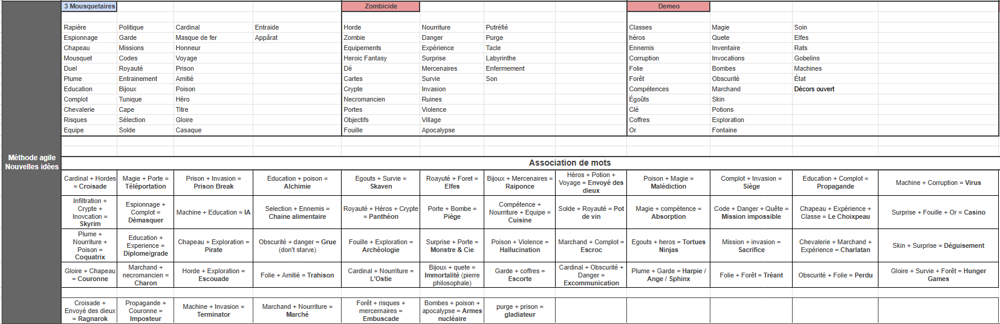
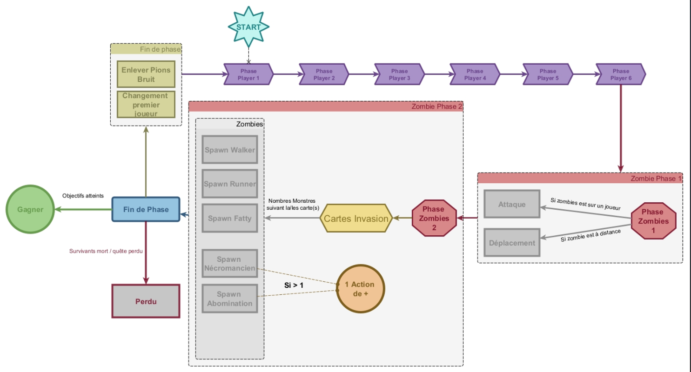
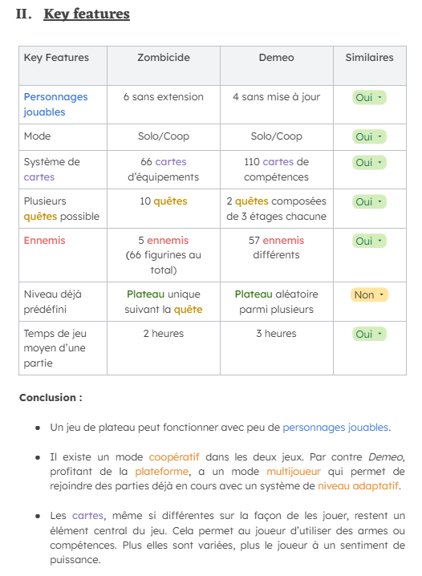
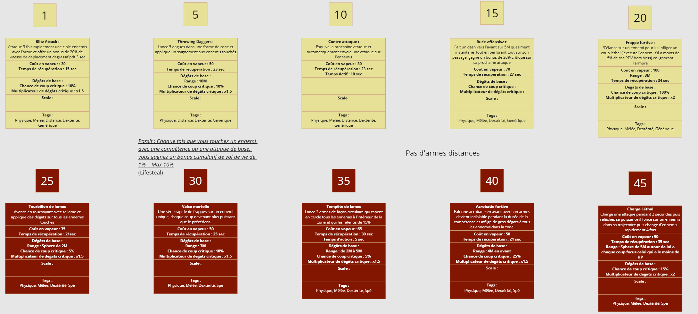
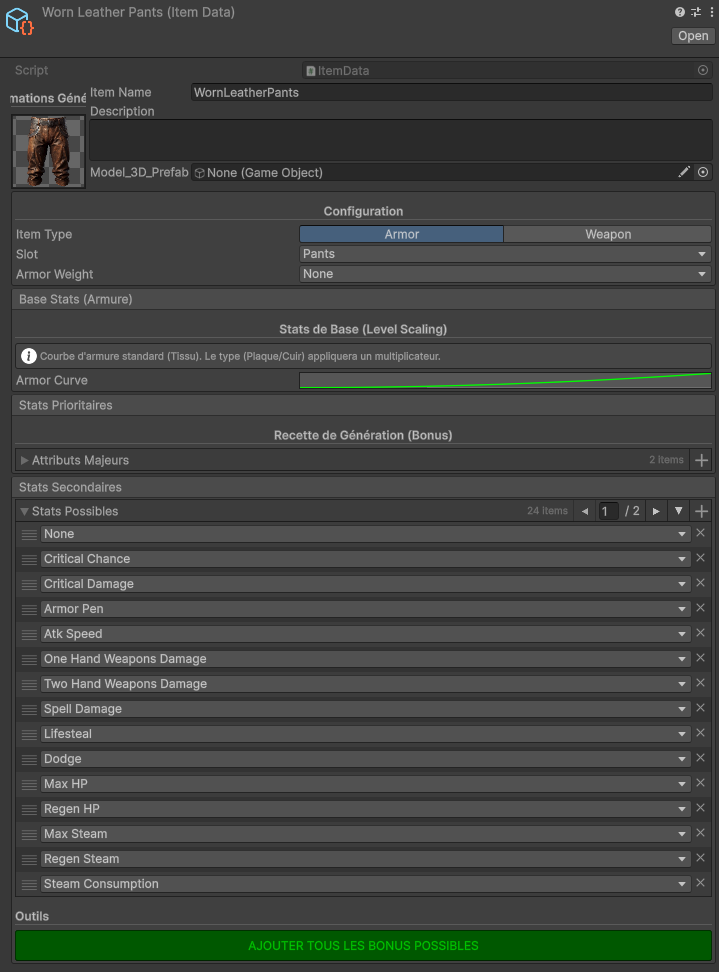
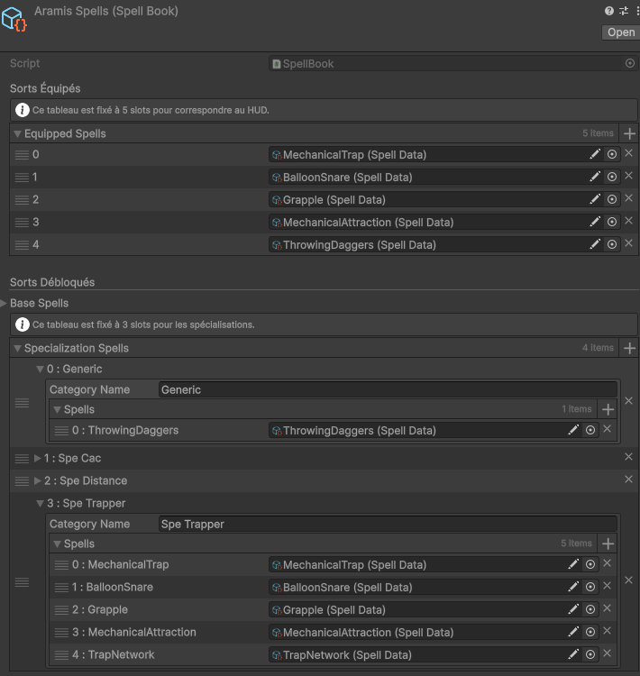
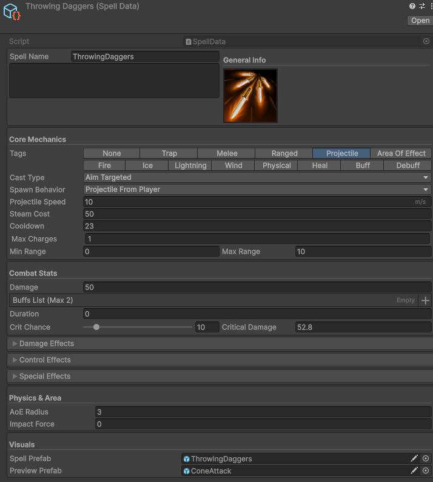
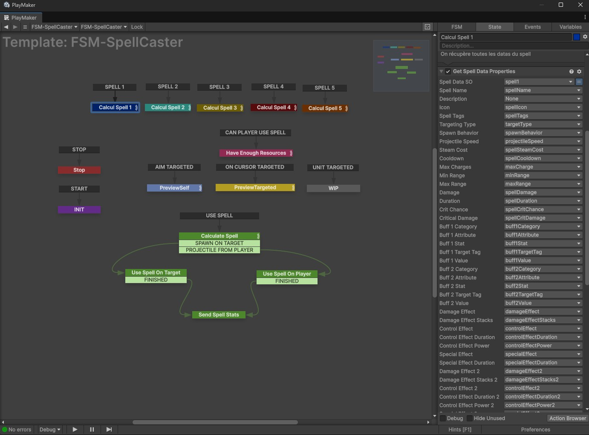
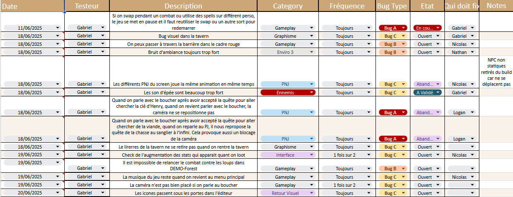

Role
GD & Tech Designer
DuréeDuration
3 ans - En cours3 years - Ongoing
ÉquipeTeam
11 People
Engine
Unity C#
Contexte : L'influence DemeoContext: The Demeo Influence
Au départ, l'objectif était de créer un jeu vidéo reprenant fidèlement les codes du jeu de plateau, dans le style de Demeo. Pour structurer cette approche, j'ai réalisé une analyse approfondie des boucles de jeu de Zombicide afin de les adapter au format numérique.
Initially, the goal was to create a video game faithfully reproducing board game codes, in the style of Demeo. To structure this approach, I conducted an in-depth analysis of Zombicide's game loops to adapt them to the digital format.
Méthode Agile et UniversAgile Method and Universe
Durant la phase de conception, nous avons utilisé des méthodes agiles et d'association d'idées pour définir l'univers du jeu. Notre réflexion balançait initialement entre deux thématiques fortes : le Steampunk et un univers de Vampires.
During the concept phase, we used agile brainstorming and word association methods to define the game's universe. Our ideas initially balanced between two strong themes: Steampunk and a Vampire universe.

Matrice d'association d'idées pour la définition de la direction artistique Word association matrix to define Art Direction

Déconstruction de la boucle de jeu de Zombicide pour l'adapter au projet Deconstruction of Zombicide's game loop to adapt it to the project
J'ai ensuite comparé les piliers de la version plateau de Zombicide et de la version hybride de Demeo pour définir les fonctionnalités clés de notre prototype initial Benchmark.
I then compared the pillars of Zombicide board version and Demeo hybrid version to define the key features of our initial Benchmark prototype.

Comparatif des Key Features pour le prototype V1 Key Features comparison for V1 prototype
🚀 Le Pivot : Vers un RPG Temps RéelThe Pivot: To Real-Time RPG
Après plusieurs tests, nous avons constaté que le pur tour par tour manquait d'engagement. Nous avons décidé de pivoter vers un RPG Temps Réel avec Pause Active, inspiré de Dragon Age et Solasta, pour dynamiser l'expérience.
After several tests, we found that pure turn-based gameplay lacked engagement. We decided to pivot to a Real-Time RPG with Active Pause, inspired by Dragon Age and Solasta, to energize the experience.
Attributs & Coûts PondérésAttributes & Weighted Costs
J'ai formalisé l'intégralité des règles mathématiques du jeu sur Excel. J'ai mis en place un système pyramidal où chaque attribut primaire influence directement 3 statistiques secondaires.
I formalized all the game's mathematical rules on Excel. I implemented a pyramidal system where each primary attribute directly influences 3 secondary statistics.

Pour assurer l'équilibrage, j'ai défini des coûts pondérés. Par exemple, il faut investir 2 points pour obtenir 1% de Critique, alors qu'il en faut 20 pour obtenir 1% de Vol de Vie. De plus, j'ai instauré des limites maximales pour éviter qu'une statistique ne devienne trop puissante.
To ensure balance, I defined weighted costs. For example, getting 1% Crit costs 2 points, whereas getting 1% Lifesteal costs 20 points. Furthermore, I implemented maximum limits to prevent any stat from becoming overpowered.
Arbres de CompétencesSkill Trees
Pour garantir une profondeur stratégique, j'ai conçu des arbres de compétences complexes sur Miro. L'objectif était de permettre au joueur de créer des synergies uniques entre les différentes classes.
To ensure strategic depth, I designed complex skill trees using Miro. The goal was to allow players to create unique synergies between classes.

Structure de progression des compétences actives Active skills progression structure

Arbre nodal des passifs et modificateurs Nodal tree for passives and stat modifiers
Architecture : Scriptable Objects & FSMArchitecture: Scriptable Objects & FSM
Pour l'implémentation, j'ai mis en place une architecture modulaire basée sur les Scriptable Objects d'Unity. Cela garantit la flexibilité et l'autonomie de l'équipe design pour créer du contenu directement dans l'inspecteur.
For implementation, I set up a modular architecture based on Unity's Scriptable Objects to ensure flexibility and autonomy for the design team.



Standardisation Playmaker FSM
J'ai conçu un template de State Machine via Playmaker pour gérer la boucle complète d'utilisation d'une compétence : Détection, Ciblage et Instanciation.
I designed a State Machine template via Playmaker to manage the full skill usage loop: Detection, Targeting, and Instantiation.

Économie & LootEconomy & Loot
L'économie du jeu repose sur 6 niveaux de rareté, allant de Commun à Mythique. J'ai aussi créé des objets Maudits qui apportent des bonus massifs contrebalancés par des malus handicapants.
The game economy relies on 6 rarity tiers, ranging from Common to Mythic. I also created Cursed items providing massive bonuses counterbalanced by crippling penalties.

Le tableau ci-dessous définit le poids théorique de chaque item par niveau. Cela permet de créer un objet et d'être sûr que ses statistiques seront mathématiquement adaptées au niveau actuel du joueur.
The table below defines the theoretical weight of each item per level. This ensures any created item has stats mathematically scaled to the player's current level.

Production & TrackingProduction & Tracking
J'ai mis en place des pipelines de production rigoureux pour synchroniser l'équipe. J'utilise des outils de tracking pour monitorer l'avancement des tâches et un fichier de suivi pour la chasse aux bugs QA.
I implemented rigorous production pipelines to synchronize the team. I use tracking tools to monitor task progress and a tracking file for bug hunting QA.

